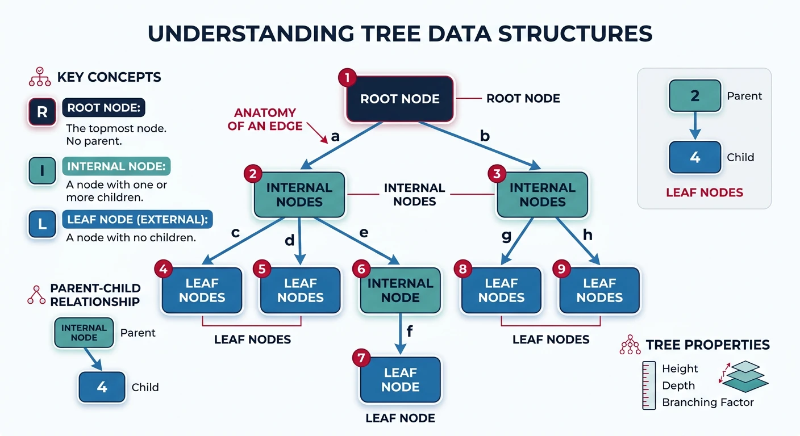
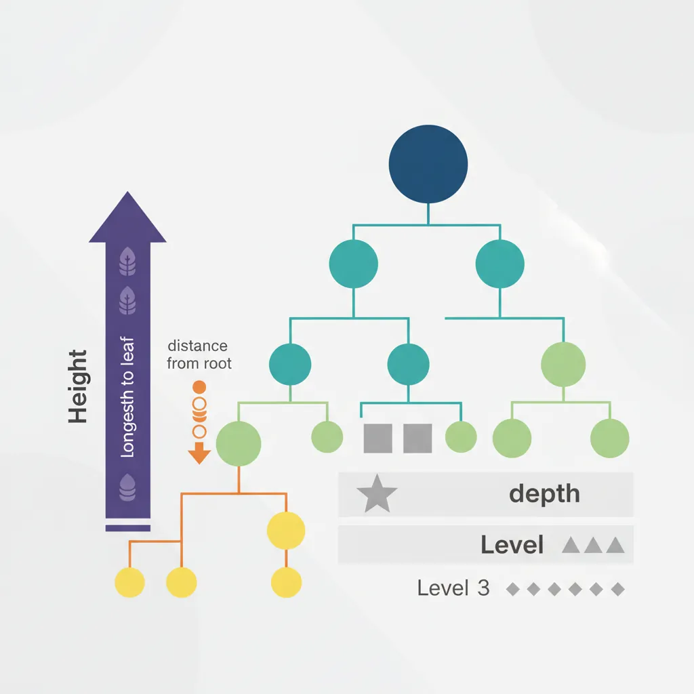

Introduction to Trees
A tree is a hierarchical data structure consisting of nodes connected by edges. Unlike linear structures (arrays, linked lists), trees represent hierarchical relationships with a single root node and zero or more child nodes forming subtrees. Trees are fundamental in computer science, used in file systems, databases, compilers, and many algorithms.

Tree Terminology
Key Terms
| Term | Definition |
|---|---|
| Root | Topmost node with no parent |
| Leaf | Node with no children |
| Internal Node | Node with at least one child |
| Height | Longest path from node to leaf |
| Depth | Path length from root to node |
| Level | Depth + 1 (root is level 1) |
| Degree | Number of children of a node |
| Ancestor/Descendant | Nodes in the path from root |
Types of Binary Trees
Binary Tree Types
- Full Binary Tree: Every node has 0 or 2 children
- Complete Binary Tree: All levels filled except possibly the last, filled left to right
- Perfect Binary Tree: All internal nodes have 2 children, all leaves at same level
- Balanced Binary Tree: Height of left and right subtrees differ by at most 1
- Degenerate/Skewed: Each node has only one child (like a linked list)
Tree Representation
Tree Traversals
flowchart TD
subgraph Tree["Binary Tree"]
A(("1")) --> B(("2"))
A --> C(("3"))
B --> D(("4"))
B --> E(("5"))
C --> F(("6"))
C --> G(("7"))
end
subgraph Orders["Traversal Results"]
direction LR
IN["Inorder: 4→2→5→1→6→3→7"]
PRE["Preorder: 1→2→4→5→3→6→7"]
POST["Postorder: 4→5→2→6→7→3→1"]
LVL["Level-order: 1→2→3→4→5→6→7"]
end
When to Use Each Traversal
- Inorder — produces sorted output for BSTs; used in expression evaluation
- Preorder — copy/serialize a tree; prefix expression generation
- Postorder — delete tree safely; calculate folder sizes; postfix expressions
- Level-order — find shortest path; serialize for BFS; level-by-level printing
DFS Traversals (Depth-First)
BFS Traversal (Level Order)
Level-order traversal visits nodes breadth-first — all nodes at depth 0 (root), then depth 1, then depth 2, and so on. It uses a queue (FIFO): enqueue root, then repeatedly dequeue a node, process it, and enqueue its children. This naturally processes nodes left-to-right within each level. BFS is essential for problems like "minimum depth", "right side view", "zigzag level order", and "connect level pointers".
Key variant — grouped by level: To return results as a list-of-lists (one inner list per level), track the queue's size at the start of each iteration and process exactly that many nodes before moving to the next level.
Tree Properties
Understanding tree dimensions is crucial for complexity analysis and interview problems. Height of a node is the longest path from that node down to a leaf (height of leaf = 0, height of tree = height of root). Depth of a node is the distance from the root down to that node (depth of root = 0). A tree is balanced if for every node, the heights of left and right subtrees differ by at most 1.
Key formulas: A complete binary tree of height \(h\) has between \(2^h\) and \(2^{h+1}-1\) nodes. A full binary tree (every node has 0 or 2 children) with \(n\) internal nodes has \(n+1\) leaves. These properties determine whether operations are \(O(\log n)\) (balanced) or \(O(n)\) (degenerate/skewed).

Tree Construction
A unique binary tree can be reconstructed from two traversals — but only certain pairs work: preorder + inorder or postorder + inorder. Preorder/postorder alone is NOT sufficient (they can't distinguish left/right children without inorder as a "separator"). The algorithm: (1) the first element of preorder is always the root, (2) find that element in inorder — everything left is the left subtree, everything right is the right subtree, (3) recurse on each half.
Why This Works
Inorder tells you which nodes belong to the left vs right subtree. Preorder/Postorder tells you which node is the root of each subtree. Together, they uniquely identify the tree structure. Use a hash map to find the root's index in inorder in \(O(1)\) — avoiding \(O(n)\) linear search each time, bringing total time from \(O(n^2)\) to \(O(n)\).
LeetCode Practice Problems
Easy 104. Maximum Depth of Binary Tree
Find the maximum depth (height) of a binary tree.
Easy 226. Invert Binary Tree
Invert (mirror) a binary tree.
Easy 100. Same Tree
Check if two binary trees are identical.
Medium 236. Lowest Common Ancestor
Find the lowest common ancestor (LCA) of two nodes.
Medium 105. Construct Binary Tree from Preorder and Inorder
Build tree from preorder and inorder traversals.
Medium 114. Flatten Binary Tree to Linked List
Flatten tree to linked list in-place (preorder).
Hard 124. Binary Tree Maximum Path Sum
Find the maximum path sum (path can start and end anywhere).
Quick Check — Test Yourself
- Write the in-order traversal of a binary tree iteratively (without recursion).
- Given a binary tree, determine whether it is height-balanced in \(O(n)\).
- Find the lowest common ancestor (LCA) of two nodes in a binary tree.
Common Bugs
- Confusing height and depth: Height = edges from node to deepest leaf. Depth = edges from root to node. A single-node tree has height 0.
- Missing null check in recursive tree code: Every recursive tree function needs a base case:
if not node: return .... Forgetting this causes NullPointerException. - Level-order traversal forgetting to track levels: BFS gives level-order, but tracking which level each node is on requires processing the queue in level-sized batches.
Interview Lens
Tree problems almost always have a clean recursive solution. The trick is thinking about what each node needs to “return up” to its parent (height, size, sum, is_valid flag). If you find yourself passing state downward, you’re usually in DFS with parameters; if returning state upward, you’re in post-order recursion.
Production Lens
File systems are trees (directories are internal nodes, files are leaves). DOM (browser) is a tree. JSON/XML are trees. Parsers produce abstract syntax trees (ASTs). Every hierarchical data model maps to a tree — tree algorithms appear in more production code than most engineers realise.
Next in the Series
In Part 10: BST, AVL & Red-Black Trees, we'll impose ordering on tree structure — turning a general tree into a search structure, then exploring how AVL and Red-Black trees maintain \(O(\log n)\) guarantees through rotations.